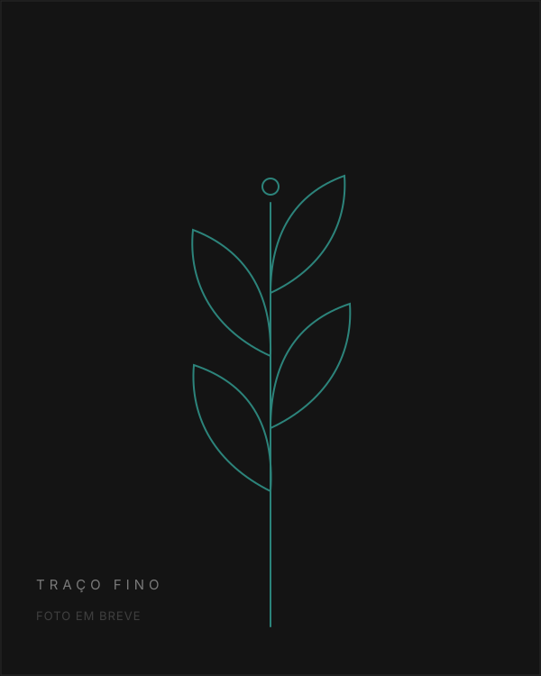
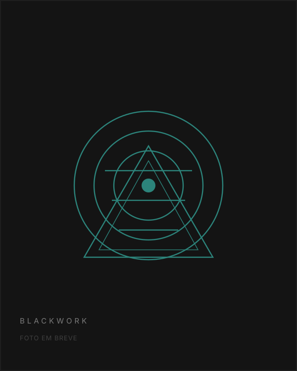
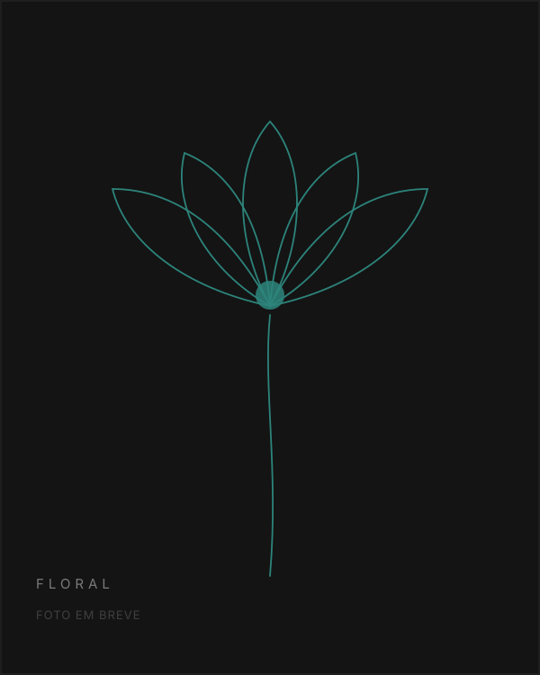
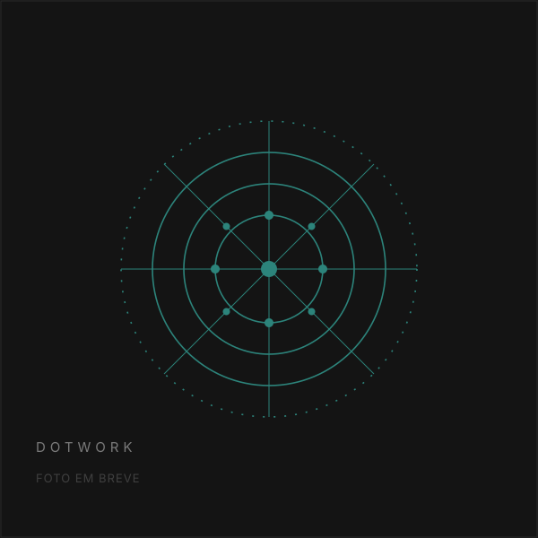

Tatuador em Criciúma
8 anos de experiência · traço fino, blackwork e projetos autorais
Trabalhos do estúdio






Imagens ilustrativas. Os trabalhos reais do estúdio entram aqui em breve — veja novidades pelo WhatsApp.
Sobre o estúdio
O iti.ink tattoo estúdio fica em Criciúma, Santa Catarina. São 8 anos de experiência transformando ideias em tatuagem — com desenho autoral, materiais descartáveis e ambiente reservado.
O atendimento é individual: você conversa direto com o tatuador, define referências, tamanho e local antes de qualquer agulha tocar a pele.
- 8+anos de experiência
- 100%desenho autoral
- 1:1atendimento individual
Estilos de tatuagem
-
Traço fino
Linhas delicadas e minimalistas, com cicatrização limpa e leitura clara na pele.
-
Blackwork
Preto sólido, contraste alto e composições gráficas que envelhecem bem.
-
Realismo
Sombreado em preto e cinza, com profundidade e detalhe em escala média.
-
Autoral
Projeto criado do zero a partir da sua ideia, sem cópia de catálogo.
Onde estamos
Dúvidas frequentes
Quanto custa fazer uma tatuagem em Criciúma?
O valor depende do tamanho, do local do corpo e do nível de detalhe do desenho. Envie a sua referência pelo WhatsApp e receba um orçamento gratuito, sem compromisso.
Preciso agendar ou posso chegar no estúdio?
O atendimento é com hora marcada. Assim o estúdio fica reservado só para você e o desenho é feito com calma, sem pressa.
Qual é a idade mínima para tatuar?
A idade mínima é 18 anos. Menores de idade só podem tatuar com autorização e acompanhamento do responsável legal.
Onde fica o iti.ink tattoo estúdio?
O estúdio fica na Rua Campos Novos, 235, bairro São Luiz, em Criciúma-SC. O agendamento é feito pelo WhatsApp (48) 98859-5450.
Pronto para a sua próxima tatuagem?
Conte a sua ideia. O orçamento é gratuito e sem compromisso.
Chamar no WhatsApp